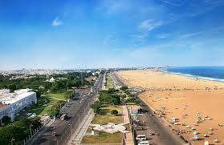
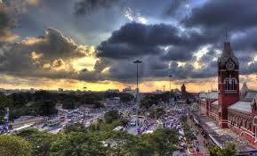
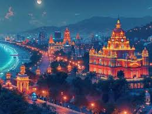

Chennai, the capital of Tamil Nadu and the "Gateway to South India," is a vibrant coastal metropolis seamlessly blending rich traditions with modern development. Tourists can explore the stunning Dravidian architecture of the Kapaleeshwarar Temple, walk along the historic Marina Beach—one of the world's longest urban beaches—and experience vibrant Carnatic music and cultural arts.
Beyond its cultural roots, the city offers, as described by TN Tourism, KAYAK, and Raintree Hotels, serene nature at Guindy National Park, fascinating history at Fort St. George, and incredible South Indian cuisine, all while showcasing a unique mix of colonial heritage and bustling, bustling urban life.